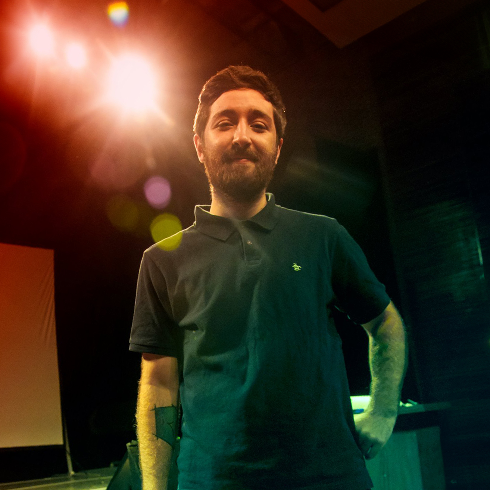

Camilo Giordano
Fotografía Digital

Soy Camilo Giordano, trabajé durante varios años como
fotógrafo institucional del CONICET y como freelance en diferentes festivales de música y eventos sociales.
Estudíe Cine en la UNLP y continue mis estudios enfocandome en la
postproducción en diferentes instituciones. Actualmente estoy estudiando Desarrollo y maquetación web.
Trabajo en el area de luces en cine y videoclips. La mayoría de las veces me
desempeño como Gaffer pero también he dirigido la Fotografía de varios proyectos, como por ejemplo el largometraje “Historia de
lo oculto”.